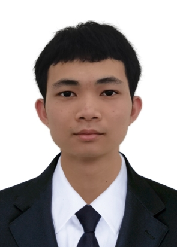

Zhengning Wu 武正宁Ph.D. Student
Trustworthy Machine Learning Lab (TML Lab)
Address: J12/ 1 Cleveland St, Darlington, NSW 2008, Australia
|
 |
Biography
I am a bachelor-straight-to-Ph.D. student at the School of Computer Science, The University of Sydney (USYD). I received the bachelor's degree from the College of Computer Sciences and Electronic Engineering, Hunan University in 2022. My research mainly focuses on label-noise learning and causal inference.
Education Background
-
Ph.D. student, 2022.08 - 2025.08 (expected) The University of Sydney, Australia, advised by Prof. Tongliang Liu
-
B.Eng., 2018.09 - 2022.06 Hunan University, Changsha, China
Publications
An epistasis and heterogeneity analysis method based on maximum correlation and maximum consistence criteria
Xia Chen, Yexiong Lin, Qiang Qu, Bin Ning, Haowen Chen, Xiong Li.
Mathematical Biosciences and Engineering, 2021.
Authenticity verification on social data outsourcing
Haowen Chen, Qiang Qu, Yexiong Lin, Xia Chen, Keqin Li.
Computers & Security, 2021.
A Multi-Source Data Fusion Framework for Revealing the Regulatory Mechanism of Breast Cancer Immune Evasion.
Xia Chen, Yexiong Lin, Qiang Qu, Bin Ning, Haowen Chen, Lijun Cai.
Frontiers in Genetics, 2020.
Preprints
Do We Need to Penalize Variance of Losses for Learning with Label Noise?
Yexiong Lin, Yu Yao, Yuxuan Du, Jun Yu, Bo Han, Mingming Gong, Tongliang Liu.
arXiv, 2022.
Honors and Awards
the Second Prize of Undergraduate Electronic Design Contest - 2020 Embedded System Design Invitational Contest(Intel Cup), 2020.
Academic Service
- Reviewer: First International Conference on Artifcial Intelligence and Sustainable Computing for Smart Cities(AIS2C2).
- Program committee member: 8th International Conference on Signal, Image Processing and Multimedia(SPM2021)
| © Yexiong Lin | Last update: February 2022 |